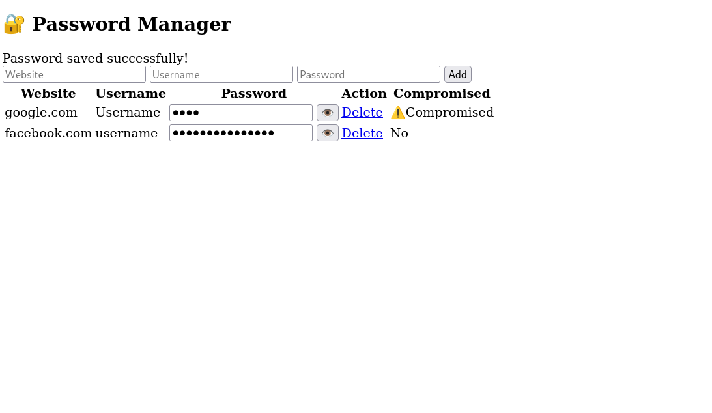
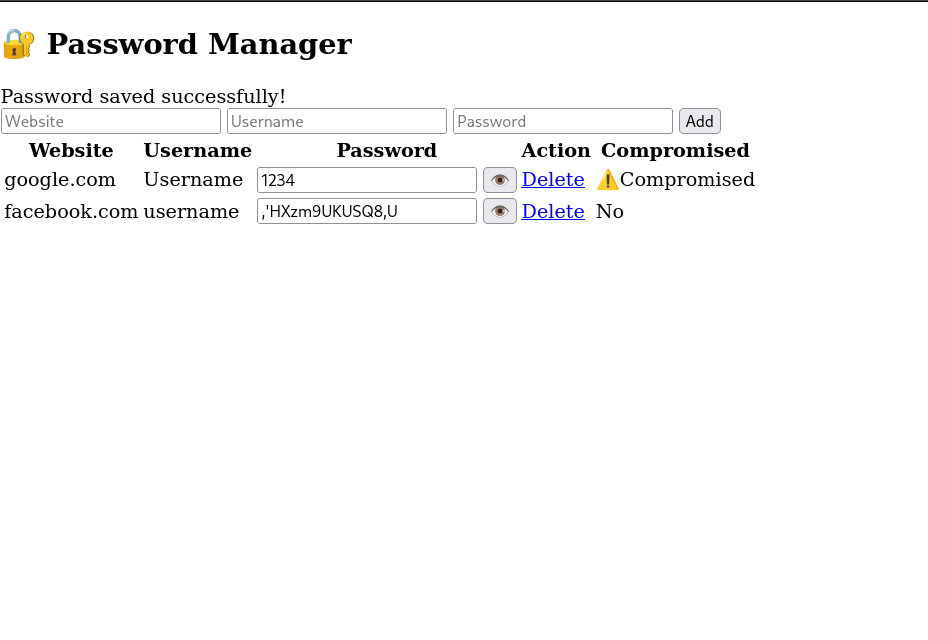

Screenshots

User login interface for secure authentication.

Password vault dashboard displaying stored credentials.

Breached password detection using the Have I Been Pwned API.
Secure password manager built with Flask, SQLite, and AES encryption.
This project is a secure password manager web application developed using Python Flask and SQLite. The application allows users to securely store credentials with AES encryption while also checking whether passwords have appeared in known data breaches using the Have I Been Pwned API.
The goal of the project was to improve understanding of secure credential storage, encryption implementation, API integration, authentication workflows, and web application security concepts.
User login interface for secure authentication.

Password vault dashboard displaying stored credentials.

Breached password detection using the Have I Been Pwned API.